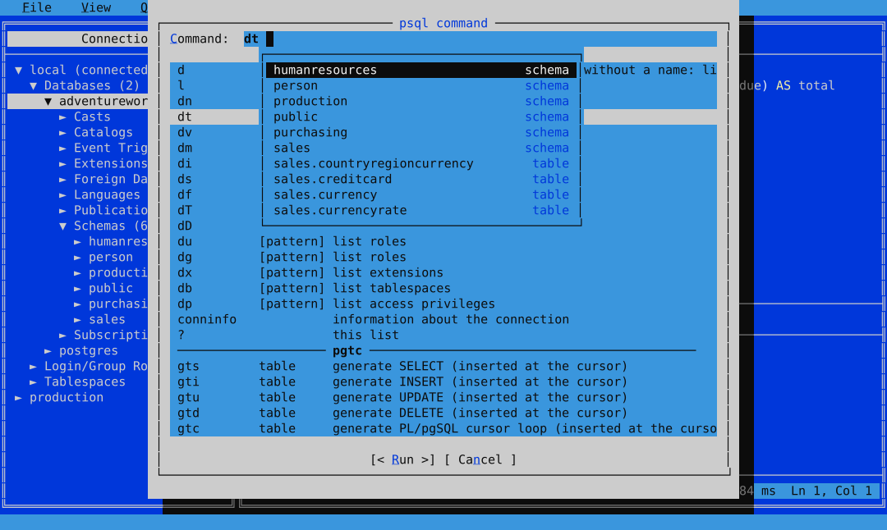
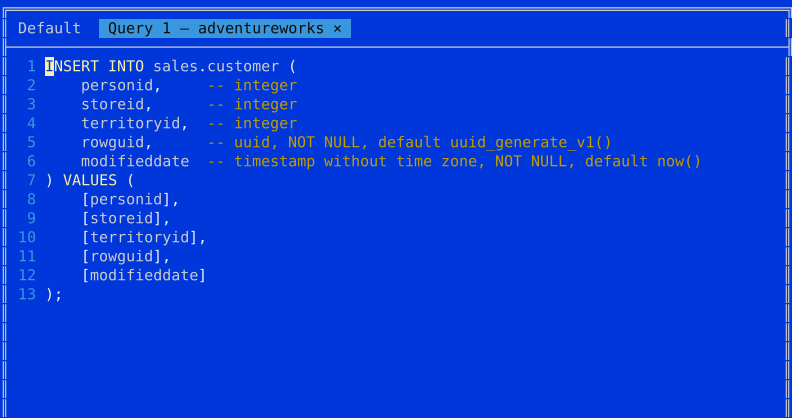

psql-style and generate commands (F4)
A command line in the query tab: psql's list and describe meta-commands, and pgtc's generate commands, which write DML, PL/pgSQL or DDL for a relation into the editor. All catalog reads use the tab's session.
The command line

- F4 (Esc 4, ) in a connected query tab. Not available while a statement executes or an export runs.
- Commands are psql's without the backslash (
dt sales.*); a leading backslash is ignored. The queries are pgtc's own, so result columns can differ from psql's. - The list under the input is never filtered: typing moves it, the arrow keys select a command, Enter on an empty input runs the selected one.
- No command history.
Completing names
Ctrl+Space / Alt+/ completes the argument, never by itself. Offered are the relation kinds
of the command (dt tables, dtv tables and views, d / dp all five
kinds, generate commands their Works on kinds, gp / gf schemas).

dt + Ctrl+Space: schemas first, then tables.- Schemas first wherever the name can be schema-qualified. A schema is inserted with its dot
(
sales.) and the list continues with its relations. di,df,dT,dDoffer schemas only;l,dn,du,dx,dboffer nothing.- Relations visible on the
search_pathare offered unqualified, others schema-qualified; after a dot everything is qualified. Case-insensitive prefix match. - Enter inserts the entry, quoted where needed; it does not run the command.
- Names come from the tab's autocomplete cache; nothing is read while a result runs or is paused.
List commands
| Command | Lists |
|---|---|
l | Databases |
dn | Schemas |
dt | Tables, partitioned tables included |
dv, dm, ds | Views, materialized views, sequences |
di | Indexes, partitioned indexes included, with their table |
df | Functions, procedures, aggregates and window functions |
dT | Data types, without array types and row types of relations |
dD | Domains |
du, dg | Roles |
dx | Extensions |
db | Tablespaces |
dp | ACLs of tables, views, materialized views, sequences and foreign tables, with column privileges |
d (no name) | Tables, views, materialized views, sequences and foreign tables |
- A command is a run of the tab like F5: result set (exportable), Messages, elapsed time. The editor text is not touched.
- Sent as a prepared statement; patterns are bind parameters.
- It runs in the session's current transaction state: part of an open transaction, rejected in an aborted one.
- Errors carry no editor position.
Modifiers
| Write | Meaning |
|---|---|
dtv, dti, … | The letters t v m i s E (foreign tables) combine. |
S | Include system objects. Without a pattern and without S, schemas pg_* and information_schema (du: roles pg_*) are left out; with a pattern they are always searched. TOAST schemas never appear. |
+ | More columns: size, description, owner, ACL, … depending on the command. |
Patterns
psql's syntax: *, ?, schema.name, "Exact Name"; unquoted text
is folded to lower case. Each part becomes an anchored regular expression matched with ~.
- As in psql, without a schema part (or without a pattern) only objects visible on the
search_pathare listed. Usesales.*or*.*to look outside it. - Only
*and?are wildcards; other regex characters are escaped. l,dn,du,dx,dbtake a name pattern only (a dot is part of the name). Elsewhere the database part ofdb.schema.nameis ignored.
Describing one object: d name

d sales.customer: one result set per section.For a table, view, materialized view, sequence or foreign table. Empty sections are left out.
| Result set | Columns |
|---|---|
| Relation | Schema, name, type, owner, description. |
| Columns | Column, type, collation when not the type's default, not null, default or identity. d+: storage and description. |
| Indexes | Name, kind (primary key, unique or empty), pg_get_indexdef. |
| Constraints | Name, type, pg_get_constraintdef. |
| Triggers | Name and pg_get_triggerdef; no internal triggers. |
| Definition | Views and materialized views: pg_get_viewdef. |
- An unqualified name must be visible on the
search_path; unquoted names are folded to lower case. The name is a bind parameter. - A pattern (
*,?) is refused — usedt,dv, …. - For the full DDL, select the relation in the tree (Object view).
conninfo and ?
| Command | What it does |
|---|---|
conninfo | Writes database, user, host, port, sslmode and the server's major version into Messages. Nothing is sent to the server; SSL mode is the configured value, not whether the session is encrypted. |
? | All commands as a result set. |
What is not there
\c (a query tab is bound to one database), \i, \o (see
SQL files and Export result), \copy,
\x, \h, \set, \password, \g, \watch,
\if. A \ line in a script is not a command: it is sent to the server as it is.
Generate commands: SQL for a table
Each reads the relation's columns (pg_attribute) and primary-key / unique constraints
(pg_constraint) and inserts a statement at the editor cursor; nothing is executed.
gtg, gtj, gtr and gtv also read foreign keys; gp and
gf read nothing.
| Command | Writes | Works on |
|---|---|---|
gts table | SELECT with every column | tables, views, foreign tables |
gti table | INSERT | tables, views, foreign tables |
gtu table | UPDATE … WHERE key | tables, views, foreign tables |
gtd table | DELETE … WHERE key | tables, views, foreign tables |
gto table | INSERT … ON CONFLICT … DO UPDATE | tables, views, foreign tables |
gtm table | MERGE (PostgreSQL 15+) | tables |
gtc table | PL/pgSQL cursor loop | tables, views, foreign tables |
gtsi table | PL/pgSQL variables and SELECT … INTO STRICT by key | tables, views, foreign tables |
gtrb, gtra table | Trigger function and row trigger, before / after | tables |
gtsb, gtsa table | Trigger function and statement trigger, before / after | tables |
gtv table table … | CREATE VIEW joining the tables on their foreign keys | tables, views, foreign tables |
gtg table [rows] | Test data from generate_series, 100 rows by default | tables |
gtj table | SELECT joined to every referenced table | tables |
gtr table | SELECTs of the rows that reference a row | tables |
gtau table | Audit table, trigger function and trigger | tables |
gp [schema] | Empty PL/pgSQL procedure (default schema public) | — |
gpi, gpu, gpd, gpo table | PL/pgSQL procedure: insert / update by key / delete by key / upsert a row | tables |
gf [schema] | Empty PL/pgSQL function (default schema public) | — |
gfr, gfs, gft, gfe, gfj table | PL/pgSQL function: one row by key / RETURNS SETOF / RETURNS TABLE / row exists / row as jsonb | tables, views, foreign tables |
Tables = plain and partitioned. Materialized views and sequences are never accepted.
Common rules
- Table name: resolved as for
d. The output is always schema-qualified and quoted where needed. - Placeholders: values to supply are written
[column]— not valid SQL, so an unfilled statement fails to parse instead of running. - Comments: each column carries its type,
NOT NULLand default expression. - Key: the primary key; else the first
UNIQUEconstraint (by name) whose columns are allNOT NULL(unique indexes without a constraint are not considered); elseWHERE [condition]. - A tables-only command on a view or foreign table is refused. All generate commands are refused while a result of the tab is paused or an export runs.
The examples are for sales.customer: primary key customerid, filled from a sequence.
gts — SELECT
One column per line, no WHERE.
gti — INSERT

gti sales.customer." loading="lazy">gti sales.customerINSERT INTO sales.customer (
personid, -- integer
storeid, -- integer
territoryid, -- integer
rowguid, -- uuid, NOT NULL, default uuid_generate_v1()
modifieddate -- timestamp without time zone, NOT NULL, default now()
) VALUES (
[personid],
[storeid],
[territoryid],
[rowguid],
[modifieddate]
);Left out: generated columns, identity columns and columns whose default calls nextval(). Columns
with any other default are listed. Nothing left: INSERT INTO … DEFAULT VALUES.
gtu — UPDATE, gtd — DELETE
WHERE on the key. UPDATE sets every non-key column except generated and
GENERATED ALWAYS identity columns.
gto — upsert (INSERT … ON CONFLICT)
- Conflict target: the key. Unlike
gti, the key column is listed even when a sequence fills it. - All columns are key columns:
DO NOTHING. No key:ON CONFLICT DO NOTHINGwith a comment to write the target.
gtm — MERGE
MERGE INTO sales.customer AS t
USING (VALUES (
[customerid]::integer, -- integer, NOT NULL, default nextval(…)
[personid]::integer, -- integer
…
)) AS s (customerid, personid, storeid, territoryid, rowguid, modifieddate)
ON t.customerid = s.customerid -- primary key
WHEN MATCHED THEN
UPDATE SET
personid = s.personid,
…
WHEN NOT MATCHED THEN
INSERT (customerid, personid, storeid, territoryid, rowguid, modifieddate)
VALUES (s.customerid, s.personid, s.storeid, s.territoryid, s.rowguid, s.modifieddate);- Every value is cast to its column type (a bare
VALUEScolumn would resolve totext). - Before PostgreSQL 15: MERGE needs PostgreSQL 15 or later; nothing is read.
- No
WHEN NOT MATCHED BY SOURCEbranch, deliberately.
gtc — cursor loop (PL/pgSQL)
A DECLARE … BEGIN … END block: explicit cursor over all columns, FETCH into a
record, the fields listed as comments, --PROCESS THE ROW HERE. No placeholders: it runs as
it is in PL/pgSQL mode.
gtsi — read one row into variables (PL/pgSQL)
One v_column variable per column, declared with %TYPE, and
SELECT … INTO STRICT … WHERE key. A column name that is not a plain identifier gets a usable variable
name ("Due Date" → v_due_date).
gtrb, gtra, gtsb, gtsa — trigger function and trigger
CREATE OR REPLACE FUNCTION schema.[function_name]() RETURNS trigger with a
TG_OP branch per event, then CREATE TRIGGER … INSERT OR UPDATE OR DELETE.
| Command | Fires | Trigger name | The function |
|---|---|---|---|
gtrb | BEFORE … FOR EACH ROW | customer_rb_trg | Lists the NEW. / OLD. fields; returns NEW or OLD per branch. |
gtra | AFTER … FOR EACH ROW | customer_ra_trg | Lists the fields; no RETURN in the branches. |
gtsb | BEFORE … FOR EACH STATEMENT | customer_sb_trg | No fields; also fires for TRUNCATE, with its own branch. |
gtsa | AFTER … FOR EACH STATEMENT | customer_sa_trg |
[function_name]occurs twice. The function is created in the table's schema.- Run in SQL mode, not PL/pgSQL mode.
- Tables only; no
INSTEAD OFtriggers.
gtv — a view over several tables
gtv sales.salesorderheader sales.customer sales.salesterritory
- Tables are aliased
T1,T2, … in the order typed; every column of every table is listed. A repeated column name becomesAS table_column. - Each table is joined to an earlier one by a foreign key between them, in either direction; the comment names
the constraint. Several candidates: the first by name, the others listed as
also: …. LEFT JOINwhen the earlier table is the referencing side and a referencing column is nullable; otherwiseJOIN.- No foreign key (always so for views and foreign tables):
JOIN … ON 1=1 -- no foreign key: write the join condition. - Created in the schema of the first table, named
[view_name].
gtg — test data
gtg sales.customer 500INSERT INTO sales.customer (
personid,
storeid,
territoryid
)
SELECT
p1.businessentityid, -- FK_Customer_Person_PersonID, a random row of person.person
p2.businessentityid, -- FK_Customer_Store_StoreID, a random row of sales.store
p3.territoryid -- FK_Customer_SalesTerritory_TerritoryID, a random row of sales.salesterritory
FROM generate_series(1, 500) AS g
-- "WHERE g IS NOT NULL": a new random row for each row, not one for all
LEFT JOIN LATERAL (SELECT businessentityid FROM person.person WHERE g IS NOT NULL ORDER BY random() LIMIT 1) AS p1 ON true
…- Columns: all except generated, identity and defaulted ones; a foreign-key column is always filled.
- Foreign keys: a random existing row of the referenced table per generated row;
NULLif that table is empty.ORDER BY random() LIMIT 1scans the referenced table once per row — slow for large tables. - Other columns: a value by type, built from
g:'name ' || g(cut tovarchar(n)), random numbers, dates up to a year back, booleans, UUIDs, small JSON objects, …. - Key columns: numbers continue after the current maximum; text gets a random suffix.
- Types without a generator (enums, domains, …):
[column]whenNOT NULL, elseNULL.
gtj — join the parent tables
The joins of gtv for the table and everything its foreign keys reference, as a
plain SELECT. One join per constraint (a table referenced twice is joined twice). Foreign keys a
partition inherits from its parent are left out.
gtr — rows that reference a row
-- FK_SalesOrderHeader_Customer_CustomerID
SELECT
salesorderid,
orderdate,
customerid,
totaldue
FROM sales.salesorderheader
WHERE customerid = [customerid]; -- sales.customer.customerid: integerOne SELECT per foreign-key constraint that references the table. None: No foreign key references
….
gtau — audit every change
Writes three statements:
CREATE TABLE table_audit:audit_id(identity),changed_at,changed_by(current_user),operation,old_rowandnew_rowasjsonb;- a trigger function
[function_name]that insertsTG_OP,to_jsonb(OLD)andto_jsonb(NEW); CREATE TRIGGER table_audit_trg AFTER INSERT OR UPDATE OR DELETE … FOR EACH ROW.
gp — an empty procedure
CREATE OR REPLACE PROCEDURE schema.[procedure_name]() LANGUAGE plpgsql with an empty body.
The schema is not checked. With a parameter dialog: the developer template
Create procedure.
gpi, gpu, gpd, gpo — procedures for one row of a table
CREATE OR REPLACE PROCEDURE sales.[procedure_name](
p_personid integer,
p_storeid integer,
p_territoryid integer,
p_rowguid uuid, -- NOT NULL, default uuid_generate_v1()
p_modifieddate timestamp without time zone, -- NOT NULL, default now()
INOUT p_customerid integer DEFAULT NULL -- primary key, filled by the database
)
LANGUAGE plpgsql
AS $$
BEGIN
INSERT INTO sales.customer (…) VALUES (…)
RETURNING customerid INTO p_customerid;
END;
$$;| Command | Parameters | Body |
|---|---|---|
gpi | The columns of gti; keys the database fills as INOUT … DEFAULT NULL | INSERT … RETURNING … INTO |
gpu | The key, then the columns of gtu | UPDATE … WHERE key; RAISE EXCEPTION if no row was found |
gpd | The key | DELETE … WHERE key; RAISE EXCEPTION if no row was found |
gpo | The columns of gto, the key included | INSERT … ON CONFLICT (key) DO UPDATE |
- Parameters are
p_columnwith the plain column type (not%TYPE). A name that is not a plain identifier is made one ("Due Date"→p_due_date); one that collides with a column gets_2. - Created in the table's schema as
[procedure_name]. Run in SQL mode. - No key:
gpu/gpdgetWHERE [condition]and no key parameters,gpogetsON CONFLICT DO NOTHING. All columns in the key:gpuwrites nothing.
gf — an empty function
As gp: CREATE OR REPLACE FUNCTION schema.[function_name]() RETURNS
[return_type] with RETURN [value]. With a parameter dialog: the developer template
Create function.
gfr, gfs, gft, gfe, gfj — functions that read a table
Declared STABLE, created in the table's schema as [function_name].
| Command | Parameters | Returns | Body |
|---|---|---|---|
gfr | The key | The row type of the table | SELECT … INTO a row variable; NULL when not found |
gfs | — | SETOF the table | RETURN QUERY SELECT … WHERE [condition] |
gft | — | TABLE (…), every column | As gfs, with T1. before every column |
gfe | The key | boolean | RETURN EXISTS (SELECT 1 … WHERE key) |
gfj | The key | jsonb | RETURN (SELECT to_jsonb(T1) … WHERE key); NULL when not found |
- Key and parameter names as for the procedures.
- No key (always so for views and foreign tables):
gfr,gfeandgfjhave no parameters and getWHERE [condition]. gft: theRETURNS TABLEcolumns are variables inside the function, so the table is aliasedT1and every column qualified; qualify the columns in your condition too.